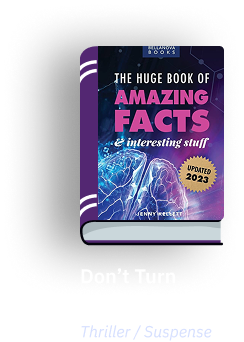
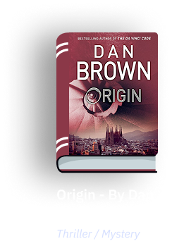
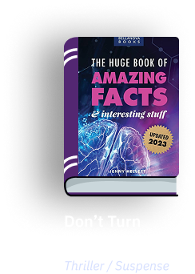
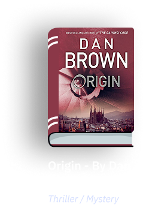

Summary
People in Glass Houses by Jayne Castle (a pseudonym for Jayne Ann
Krentz) is a science fiction romance set in a future world where people
with psychic abilities live in harmony with advanced technology. The
story follows the main characters, Harriet and Sam, who are drawn
together under unusual circumstances.
Harriet, a talented psychic, works for a company that offers
psychic services in a futuristic society. When she finds herself tangled
in a dangerous situation involving a mysterious conspiracy, she enlists
the help of Sam, a former investigator with a dark past. As they uncover
the secrets surrounding a glass house—a mysterious structure tied to
their investigation—they must navigate their growing attraction while
facing hidden dangers.
The novel combines elements of mystery, suspense, and romance, with a
focus on psychic abilities, futuristic technology, and the complexities
of relationships. The title, "People in Glass Houses," symbolizes the
fragile nature of the world the characters inhabit and the
vulnerabilities they face in their personal and professional lives.
.png)
 


